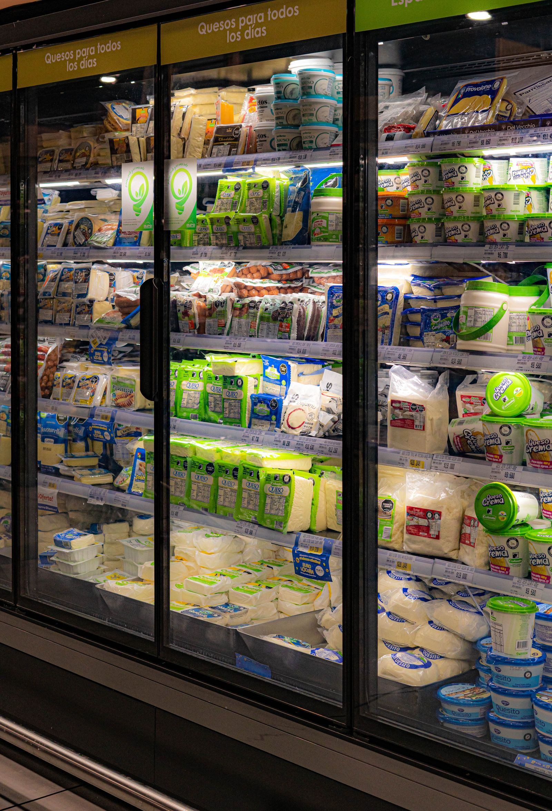
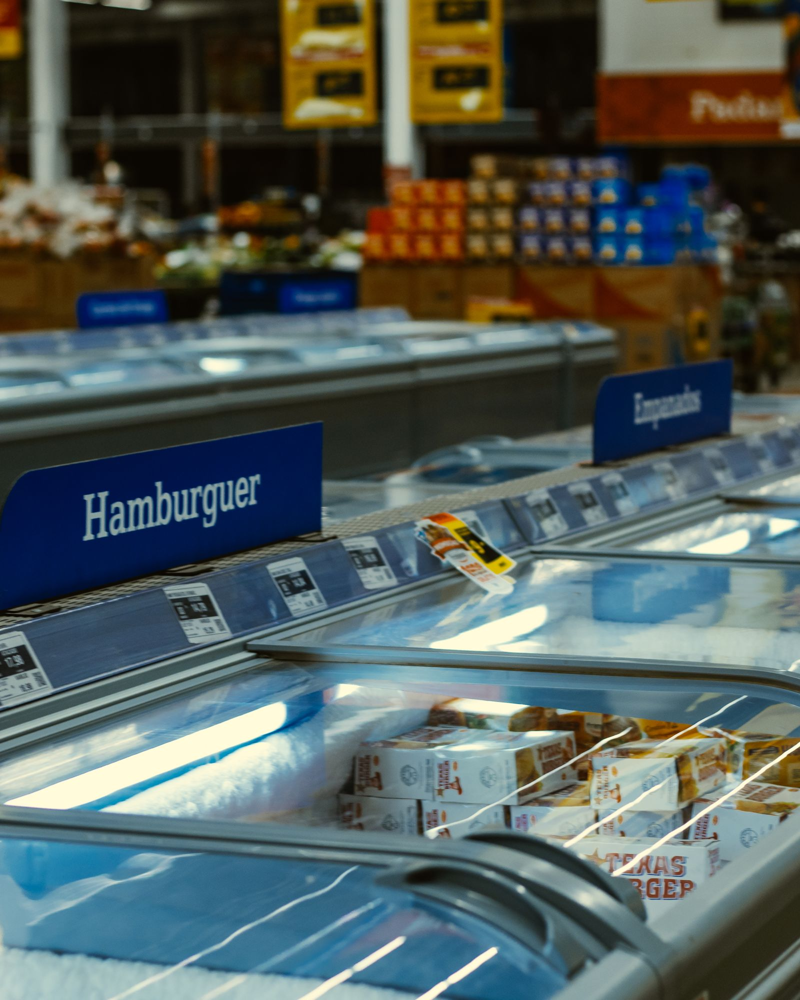
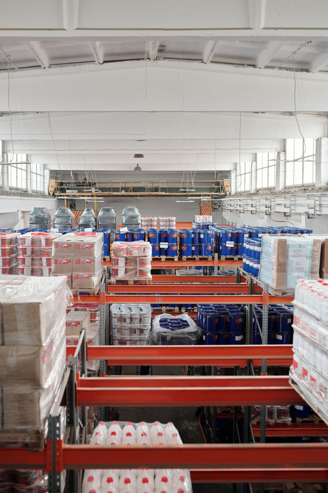

Restaurant, boulangerie, boucherie, commerce alimentaire : décrivez votre besoin en 2 minutes, nous vous mettons en relation avec un spécialiste qui vous établit un devis précis sous 24 h.

Une chambre froide bien dimensionnée consomme jusqu'à 30 % d'électricité en moins qu'un parc de réfrigérateurs équivalent — et libère votre cuisine.
Budget indicatif 2026 : de 2 500 € HT (positive 4 m³) à 15 000 € HT (négative grande capacité), pose comprise entre 15 et 30 % du total.
Voir le guide des prixLe bon choix dépend de trois critères : ce que vous stockez, en quelle quantité, et la place disponible dans votre local.
La solution de conservation courte durée : fruits et légumes, produits laitiers, boissons, préparations du jour. L'indispensable de tout restaurant et commerce alimentaire.
Tout savoir sur la positive →
Pour congeler et stocker sur la durée : viandes, poissons, surgelés, glaces. Panneaux renforcés, groupe plus puissant, plancher isolé obligatoire.
Tout savoir sur la négative →
Local atypique, gros volumes, double zone positive/négative, rayonnages spécifiques : les panneaux modulaires s'adaptent au millimètre à votre espace.
Découvrir le sur-mesure →2 minutes suffisent : type de froid, volume approximatif, commune et délai souhaité.
Un spécialiste vérifie le dimensionnement et les contraintes techniques de votre local.
Un devis précis et détaillé, établi par un professionnel du froid intervenant dans votre région.
Pose par un frigoriste certifié, mise en température et conseils d'utilisation.
Un boulanger, un boucher et un traiteur n'ont ni les mêmes températures, ni les mêmes contraintes d'aménagement. Retrouvez les repères propres à votre activité.
Dimensionner selon le nombre de couverts, séparer légumerie et viandes, respecter la marche en avant sans sacrifier la place en cuisine.
Chambre froide pour restaurant →Maîtriser la fermentation, choisir entre chambre froide, chambre de pousse et cellule, congeler les viennoiseries crues.
Chambre froide pour boulangerie →Températures réglementaires par type de viande, rails de suspension, hygrométrie et séparation cru/cuit.
Chambre froide pour boucherie →Organiser la réserve froide en arrière-boutique, gérer fruits et légumes et articuler stock et meubles de vente.
Chambre froide pour commerce →Absorber les pics événementiels, tenir la chaîne du froid en transport, privilégier le modulable et le compact.
Chambre froide pour traiteur →Laboratoire, fleuriste, pharmacie, collectivité : décrivez votre besoin, un spécialiste vous oriente vers la bonne configuration.
Décrire mon projet →Fourchettes indicatives hors taxes, matériel neuf. Le devis final dépend du volume exact, de l'accès au local et du groupe frigorifique retenu.
| Configuration | Volume | Matériel (HT) | Avec pose (HT) |
|---|---|---|---|
| Positive compacte | 4 – 6 m³ | 2 500 – 4 000 € | 3 000 – 5 200 € |
| Positive standard | 6 – 12 m³ | 3 500 – 6 500 € | 4 200 – 8 500 € |
| Négative compacte | 4 – 6 m³ | 5 000 – 8 000 € | 6 000 – 10 400 € |
| Négative standard | 6 – 12 m³ | 7 000 – 12 000 € | 8 400 – 15 600 € |
| Sur mesure / bi-zone | > 12 m³ | Sur devis — étude gratuite | |
Chiffrer mon projet gratuitement Lire le guide complet des prix
Gratuit, sans engagement — décrivez votre projet en 2 minutes.